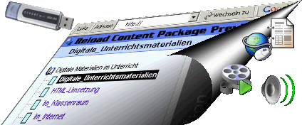
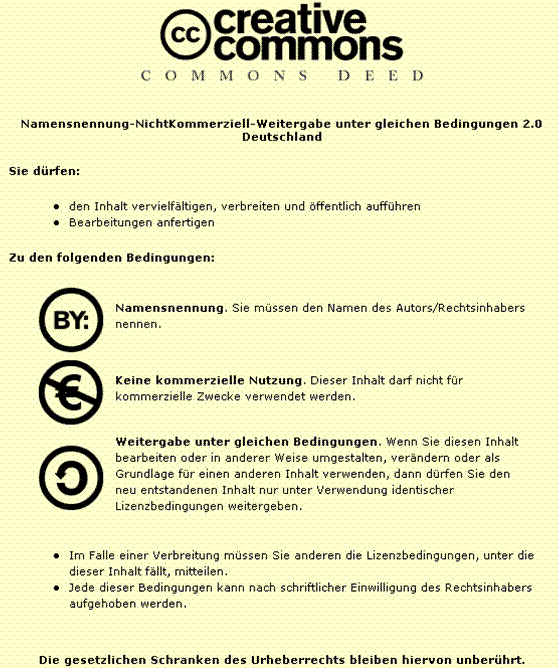

WeLOAD Version 0.92

Web
based Learning Object Authoring and Delivery
WeLOAD basiert auf dem "Portable Web Server" und RELOAD. Es unterliegt der Creative Commons-Lizenz (siehe Ende des Textes).
Der Portable Web Server liefert eine Webserverumgebung mit den derzeitigen Kompenenten:
Apache 1.3 (Open Source)
PHP 5.04 (Open Source) und
MySQL 3.23.47 (Open Source)
Somit läuft WeLOAD unter einer klassischen WAMP-Umgebung (Windows-Apache-MySQL-PHP). Diese Laufzeitumgebung wird auf mindestens 50% aller Webserver im Internet eingesetzt und gilt als besonders stabil.
Die Zusammenstellung des "Portable Web Servers" wurde durch Phillip Perkmann vom Tiroler Bildungsservice realisiert. Das WAMP von Herrn Perkmann zeichnet sich vor allem durch seine Kompaktheit aus, so dass es sogar von einem USB-Stick aus betrieben werden kann. WeLOAD 0.9 ist entpackt nur 17 MB groß. Das Team "Entwicklung und Innovation" des IQSH (Institut für Qualitätsentwicklung an Schulen Schleswig Holstein) hat sich sofort entschieden, den Portable Web Server für Eigenentwicklungen in Kooperation mit dem TiBS (Tiroler Bildungsservice, Österreich) für eigene und gemeinsame Projekte zu nutzen .
MySQL wird in WeLOAD derzeit (noch) nicht verwendet. Dennoch ist es ohne weiteres möglich, weitere Software, die in einem WAMP-System lauffähig ist, zu installieren wie zum Beispiel "Moodle" oder "PHPSurveyor" und viele weitere Tools, die für Lehrkräfte interessant sind. Hierzu wird Ihnen "Fortbildung Online" des IQSH in Kooperation mit dem TiBS kostenlose Online-Fortbildungen anbieten.
Die zweite Komponente, die WeLOAD nutzt, nennt sich RELOAD, welches von der Bolton University in England entwickelt wurde. RELOAD steht für "Reusable ELearning Object Authoring And Dilivery". RELOAD ist ein Editor, der es u.a. ermöglicht so genannte Content Packages nach internationalen eLearning-Standards anzufertigen. Die wichtigsten Standards nennen sich IMS und SCORM. In Absprache mit der Bolton University, die eine besonders elegante Form von webbasierten Content Packages entwickelt hat und deren Quelltexte im vorliegenden Produkt Anwendung finden, entstand die Idee für WeLOAD.
WeLOAD ist ein webbasierter Editor, welcher Content nach internationalen Standards generieren und gleichzeitig in einem Schulnetzwerk an jeden Schülerrechner per Browser ausliefern kann.
Die digitalen Medien und Materialien (Texte, Bilder, Sounds, Videos, Links, und weitere Dateien aller Art) kann die Lehrkraft mit WeLOAD anordnen und zu Content Packages bündeln, welche webbasiert an alle vernetzte Rechner weitergegeben werden können, ohne dass Eingriffe in das Computernetzwerk vorgenommen werden müssen.
Nach wie vor ist RELOAD ein hervorragendes Open Source Programm mit sehr vielen Möglichkeiten, die weit über WeLOAD hinausgehen. Ambitionierte Lehrerrinnen und Lehrer sollten sich unbedingt mit RELOAD auseinandersetzen. WeLOAD ist vor allem für den Schuleinsatz gedacht und stellt neben der Erstellung und Auslieferung webbasierten Contents folgende zusätzliche Möglichkeiten zur Verfügung:
Die Geschichte von WeLOAD:
Version 0.92:
Version 0.91:
Version 0.9:
Noch zu verfeinern: Gezippte WeLOAD Content Packages werden noch nicht direkt von RELOAD eingelesen, sie müssen derzeit noch manuell entpackt werden um in RELOAD lauffähig zu sein.
Ausblick:
Version 0.85:
Erstrelease auf Basis von XAMPP
Der Quellcode von WeLOAD unterliegt folgenden lizenzrechtlichen Bestimmungen:

Hartmut Karrasch, September 2005